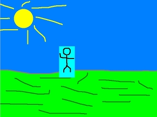
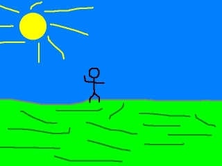

SDL_Surface 结构体中有一个叫做关键色的元素。关键色是你在blit一个表面时，不想显示出来的颜色。当你需要得到透明的背景时，你得使用这个。比如你想要把这个名叫”Foo“的小人：
应用到这张背景图中：

但是你不想让小人的浅蓝色背景出现：

为了让浅蓝色背景不出现，你必须设置表面的关键色为浅蓝色。
一般关键色是在图像被加载时设置的。
SDL_Surface *load_image( std::string filename )
{
//加载的图像
SDL_Surface* loadedImage = NULL;
//优化的图像
SDL_Surface* optimizedImage = NULL;
//加载图像
loadedImage = IMG_Load( filename.c_str() );
//如果加载成功
if( loadedImage != NULL )
{
//创建一个优化的图像
optimizedImage = SDL_DisplayFormat( loadedImage );
//释放一开始加载的图像
SDL_FreeSurface( loadedImage );
所以，这是我们将要修改的图像加载函数。
首先，我们加载并优化图像，这和前面一样。
首先，我们加载并优化图像，这和前面一样。
//如果图像优化成功
if( optimizedImage != NULL )
{
//映射关键色
Uint32 colorkey = SDL_MapRGB( optimizedImage->format, 0, 0xFF, 0xFF );
然后我们检查一下图像是否被成功优化。
如果图像被成功优化，我们就要将我们想要设为关键色的颜色映射出来。我们通过调用
如果图像被成功优化，我们就要将我们想要设为关键色的颜色映射出来。我们通过调用
SDL_MapRGB()并输入红、绿、蓝三色的颜色值，来获得与表面具有相同格式的像素值。你可以从文章3中学到更多有关像素的知识（译者注：这里仅提供英文原版链接）。 //将所有颜色为（R 0, G 0xFF, B 0xFF）的像素设为透明。
SDL_SetColorKey( optimizedImage, SDL_SRCCOLORKEY, colorkey );
}
现在是时候真正地处理关键色了。
第一个参数是我们想要设置关键色的表面。
第二个参数是我们想要设置的标志。
第三个参数是我们想要设置的关键色。你可以看出来，那是我们刚刚映射出来的颜色。
第一个参数是我们想要设置关键色的表面。
第二个参数是我们想要设置的标志。
SDL_SRCCOLORKEY标志保证了关键色仅当blit这个表面到另一个表面上时才被使用。第三个参数是我们想要设置的关键色。你可以看出来，那是我们刚刚映射出来的颜色。
//返回优化后的图像
return optimizedImage;
}
然后表面加载函数返回优化并设置关键色后的表面。
//将表面应用到窗口中
apply_surface( 0, 0, background, screen );
apply_surface( 240, 190, foo, screen );
//更新窗口
if( SDL_Flip( screen ) == -1 )
{
return 1;
}
现在，先blit背景图，然后blit做过关键色处理的小人。
对于那些使用带透明色的PNG图片的人来说，

现在，小人周围不再出现浅蓝色的背景了。对于那些使用带透明色的PNG图片的人来说，
IMG_Load()函数会自动地为他们处理透明色。在一个已经具有透明背景色的图片上设置关键色会导致糟糕的结果。另外，如果你使用SDL_DisplayFormat()，而不是SDL_DisplayFormatAlpha()，你也会丢失Alpha透明色。要保持PNG中的透明色，请不要设置关键色。IMG_Load()也会处理TGA图像的Alpha透明色。你可以在SDL的文档里得到更详细的有关关键色的信息。